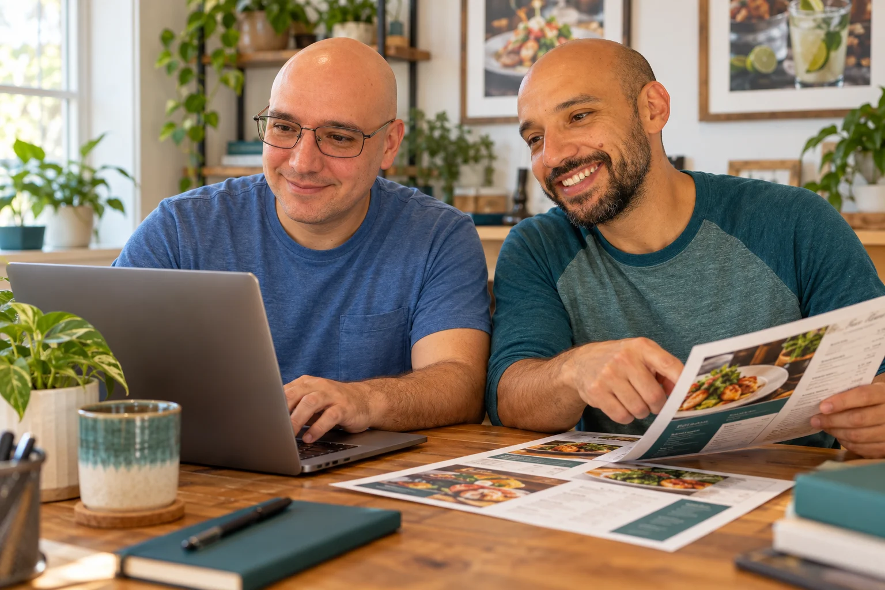

JP Battaglia
Coding & web development
JP handles the coding and web development, turning a visual direction and project requirements into a working website.
Explore our website work

We’re JP and Nino Battaglia, twin brothers bringing web development, graphic design, and branding together. JP handles the coding and web development. Nino handles graphic design and branding. Together, we help independent businesses and personal brands shape their digital presence.

Code, design, and branding meet in the work we create for your business.
Coding & web development
JP handles the coding and web development, turning a visual direction and project requirements into a working website.
Explore our website workGraphic design & branding
Nino handles graphic design and branding, shaping the visual identity and presentation behind the work.
See Nino’s portfolio projectEvery service is written up on its own page, so you know what you get before you pay.
Your menu, logo, photos and words stay yours. Cancel a plan from your billing link at any time; it stops at the end of the paid period.
Menus, websites and guest apps we build are hosted by Menu-Made. Menu Care, Website Care and the Guest App plan keep them hosted and up to date.
Plans include changes on request through your private change link, each checked and approved before it goes live.
Tell us about the website, app, menu, visibility, or accessibility project you have in mind. We’ll reply with next steps.
Ask about your project